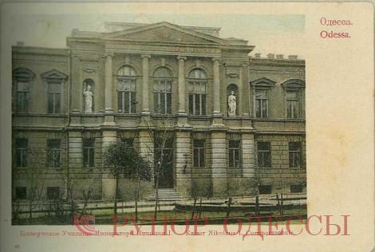
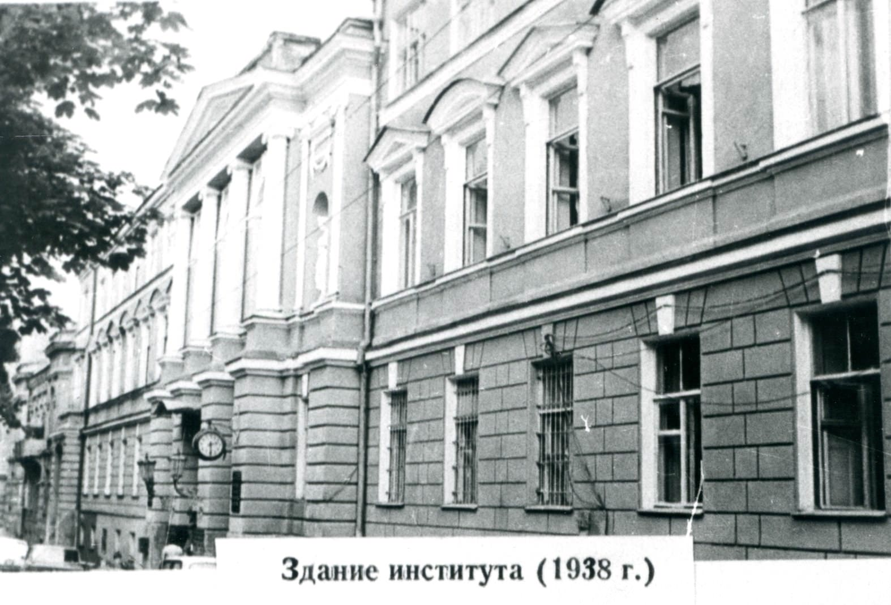
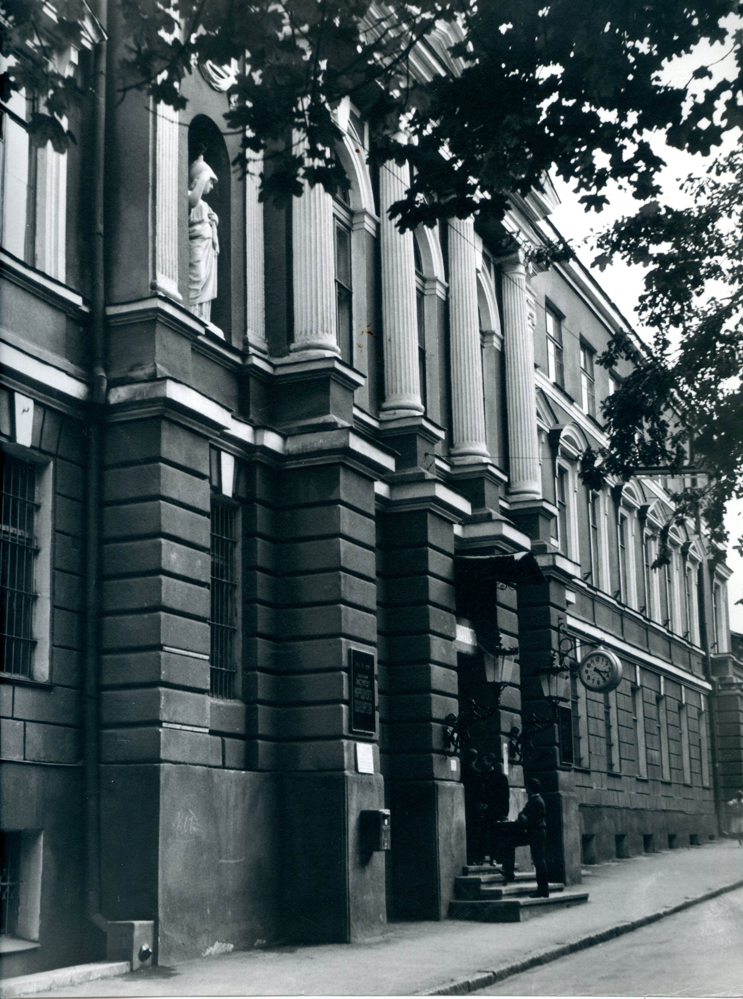
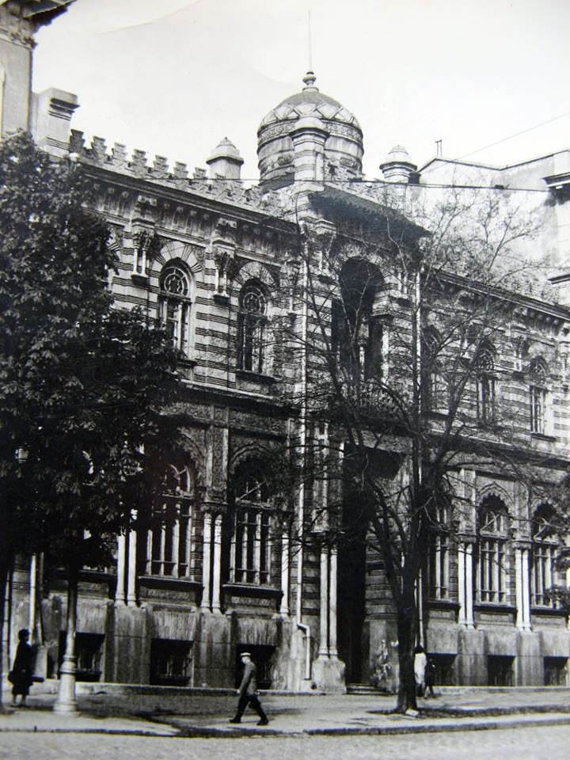

ЗДАНИЯ
Новые корпуса Одесского политехнического института 1928 - 1938 гг.На базе инженерно-строительного факультета ОПИ в 1930 году открылся ВУЗ строительного профиля (ныне ОГАСА). В 1936 году этот факультет отделился в отдельный гидротехнический институт. На базе электротехнического факультета ОПИ в 1930 году создался Одесский институт инженеров связи (ныне ОНАС им. Попова).
В 1877 году по проекту архитектора Феликса Гонсиоровского было построено здание прекрасной архитектуры в начале Преображенской улице, 8 (Троцкого, 10-летия Красной Армии, Советской Армии). 
В 1930-х годах ОПИ продолжает свою научную деятельность по этому адресу, меняя свое название на Одесский вечерний рабочий индустриальный институт (ОВРИИ) и впоследствии на Одесский индустриальный институт (ОИИ). В 1958 году переезжает на новое место, а это здание занимает Одесский институт народного хозяйства (ныне ОНЭУ), который был сформирован в 1921 году на базе экономического факультета ОПИ с участием профессора ОПИ Бориневич А.С.
Для института, который стремительно развивался, был достроен 3 этаж.
В 1933 году в ОИИ (ОПИ) открылся химико-технологический факультет, лаборатории которого размещались по адресу ул. Щепкина, 2 (ныне Елисаветинская). Но фактическое его создание относится в дальний 1922 г. Тогда была организована кафедра, которая работала несколько лет в Одесском химико-технологическом институте - кафедра подготовки специалистов по технологии неорганических веществ. После реорганизации высших учебных заведений в Одессе, эта кафедра в 1933 году перешла в состав ОИИ (ОПИ) как самостоятельный факультет.